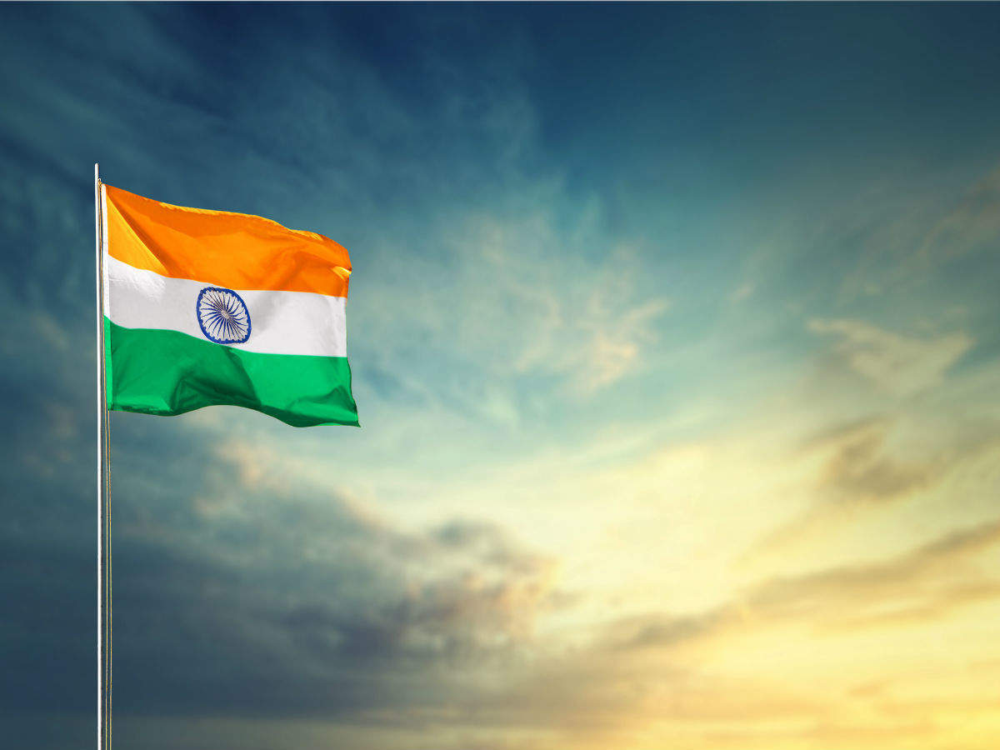

OUR INDIAN NATIONAL FLAG
The INDIAN NATIONAL FLAG was desgined by Pingali Venkayya. Pingali Venkayya was a freedom fighter and was a follower of Mahtma Gandhi. The
Indian NATIONAL FLAG was adopted on July 22nd 1947. The Indian NATIONAL FLAG is tri-colored. The three colors are, green, white and orange
in the order. In t he middle there is a ashoka chakra. It is blue in color and has 24 lines in it.
